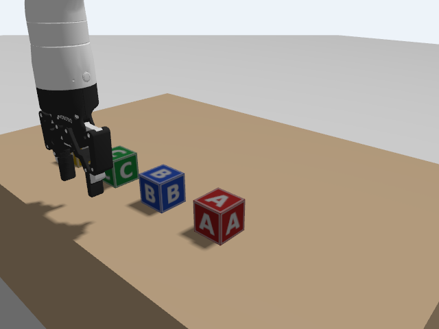
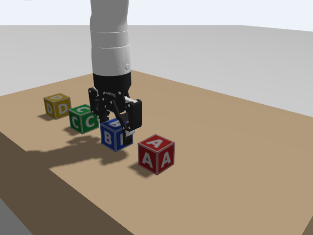
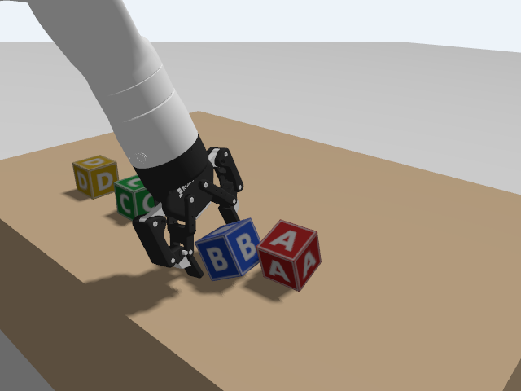

C5 · MoveIt with the simulated arm
The planner of B4, now driving the arm in Gazebo. The surprise: MoveIt cannot see Gazebo's table.
1. Goal
In B4 MoveIt planned for a fake arm. Here the same move_group plans for the arm that runs in the physics simulator, and the programs of B4 work without a change. At the end you will have:
- started
move_groupfor the simulated arm, on simulated time, - planned and executed a motion above the table with
move_poseof B4, - copied the table and the blocks into MoveIt's planning scene (it does not see Gazebo's world),
- watched MoveIt refuse a goal in the table, and plan a descent between the fingers' limits,
- and seen what happens when the scene does not know about the table: MoveIt is happy, and the table stops the arm.
Run in the course container, Gazebo headless, with the programs of B4: Python for the whole sequence, and the C++ move_pose for the first three moves (above the table, into the table, down around block B), with the same results. The gripper was not driven through MoveIt (see Concepts), and RViz with MoveIt and Gazebo together was not tried. Planning is random and not every run is as clean as the one shown (see step 7).
2. Concepts
What stays the same
MoveIt sends a trajectory to a FollowJointTrajectory action: /joint_trajectory_controller/follow_joint_trajectory. The fake arm of B4, the Gazebo arm of C2 and a real arm all offer that action under that name. So move_group and the programs of B4 do not know which one they talk to. That is the point of the twin.
What changes: the simulated clock
The joint states carry simulated time (C4), so move_group must run with use_sim_time, or it compares two different clocks and refuses the states as stale. The launch file of this lesson sets it.
Two worlds that do not know each other
Gazebo has a world with physics: the table and the blocks are in the file lab.sdf. MoveIt has its own planning scene (B4): the arm and what you tell it about. Nothing connects them. MoveIt does not read the SDF; Gazebo does not read the scene. If the table is not in the planning scene, MoveIt plans straight through it, and Gazebo's arm hits it for real. Keeping the two in step is your job. In this lesson it is done once, by hand, with add_box of B4. In D the blocks that move are left out of the scene on purpose (see D2).
Kinova's own launch file
Kinova's MoveIt package has a sim.launch.py, but it starts move_group only together with RViz and with its log switched off (--log-level fatal, to hide warnings about mimic joints). The launch file of this course starts just move_group, with its log on, and RViz only if you ask (launch_rviz:=true, not tried here).
The gripper
Kinova's MoveIt configuration (moveit_controllers.yaml) lists the gripper controller with the type GripperCommand. The Gazebo arm's gripper controller speaks ParallelGripperCommand (C2). So MoveIt cannot drive that gripper as configured. This lesson does not try: the gripper is moved by the action command of C2, and so it will be in D.
3. Do it
-
Build
host Open a terminal in the
ros2-tutorialfolder and enter a container (this is T1):docker/run_ros2.shhost Open a terminal in the
ros2-tutorialfolder (this is T1).container Five packages in the chain: the launch files of C2 and C3, the programs of B4 and the launch file of this lesson.
for p in c2-sim c3-world b4-moveit c5-moveit; do (cd code/$p && colcon build && echo "built $p"); doneEach build prints its summary and then
built NAME; the B4 build takes a minute and may print notes about a deprecated package (harmless). In every terminal of this lesson, source the four packages before using them:for p in c2-sim c3-world b4-moveit c5-moveit; do source code/$p/install/setup.bash; done -
The launch file
"""MoveIt's move_group for the Gen3 that runs in Gazebo (started by c3_world lab_arm.launch.py or c2_sim sim.launch.py). Kinova's own sim.launch.py of the MoveIt package starts move_group only together with RViz and silences its log. This one starts just move_group (and RViz if asked), on simulated time. It plans; the trajectories go to the joint_trajectory_controller of the simulated arm, which has the same action name as the fake and the real arm.""" from launch import LaunchDescription from launch.actions import DeclareLaunchArgument from launch.conditions import IfCondition from launch.substitutions import LaunchConfiguration from launch_ros.actions import Node from ament_index_python.packages import get_package_share_directory from moveit_configs_utils import MoveItConfigsBuilder import os PKG = "kinova_gen3_7dof_robotiq_2f_85_moveit_config" def generate_launch_description(): description_arguments = { "robot_ip": "xxx.yyy.zzz.www", "use_fake_hardware": "false", "gripper": "robotiq_2f_85", "dof": "7", "sim_gazebo": "true", "vision": "false", } moveit_config = ( MoveItConfigsBuilder("gen3", package_name=PKG) .robot_description(mappings=description_arguments) .trajectory_execution(file_path="config/moveit_controllers.yaml") .planning_scene_monitor(publish_robot_description=True, publish_robot_description_semantic=True) .planning_pipelines(pipelines=["ompl"]) .to_moveit_configs() ) use_sim_time = {"use_sim_time": True} move_group = Node( package="moveit_ros_move_group", executable="move_group", output="screen", parameters=[moveit_config.to_dict(), use_sim_time]) rviz = Node( package="rviz2", executable="rviz2", name="rviz2_moveit", output="log", arguments=["-d", os.path.join(get_package_share_directory(PKG), "config", "moveit.rviz")], parameters=[moveit_config.robot_description, moveit_config.robot_description_semantic, moveit_config.robot_description_kinematics, moveit_config.planning_pipelines, moveit_config.joint_limits, use_sim_time], condition=IfCondition(LaunchConfiguration("launch_rviz"))) return LaunchDescription([DeclareLaunchArgument("launch_rviz", default_value="false"), move_group, rviz])It is the MoveIt configuration of B4 (the same Kinova package, the same planning group
manipulator), withsim_gazebo:=truefor the description anduse_sim_timefor the node. -
Start Gazebo, then MoveIt
container T1: source the packages (the line of step 1), then start the arm in the lab world, with a window (add
gui:=falsewithout a display):ros2 launch c3_world lab_arm.launch.pyOpen a second terminal (T2:
docker/run_ros2.shin theros2-tutorialfolder), source the packages, and startmove_group:ros2 launch c5_moveit move_group.launch.pyWait for
You can start planning now!. As in B4, the log has harmless noise (octomap, the class loader,/recognize_objects); andmove_groupmay crash with a segmentation fault when you stop it with Ctrl+C.Open a third terminal (T3) for the commands below, and source the packages there too.
-
Plan and execute above the table
The hand goes 0.40 m forward, 0.50 m up, pointing down (roll 180°, pitch 0, yaw 90°: the hand of C4).
move_poseis the program of B4. container T3:ros2 run b4_moveit move_pose.py 0.40 0 0.50 180 0 90ros2 run b4_moveit move_pose 0.40 0 0.50 180 0 90result: SUCCESS trajectory: 55 points, 5.31 s
(The number of points and the duration vary with the random planner.) Check where the hand really is:
ros2 run tf2_ros tf2_echo base_link end_effector_link- Translation: [0.401, -0.000, 0.500]
(Ctrl+C after the first lines.) The simulated arm followed MoveIt's plan to within 1 mm. This is the side camera of C3:

The hand 0.50 m up, pointing down, near the table's edge. The picture was taken with py/save_image.py /side_camera/imageof C3. -
Tell MoveIt about the table and the blocks
The same
add_boxas in B4, with the numbers oflab.sdf(C3): the table's centre (0.65, 0, 0.15) and size 0.6 × 0.9 × 0.3, and the four blocks at x = 0.50, y = −0.18, −0.06, 0.06, 0.18, z = 0.325, 5 cm cubes. container T3:ros2 run b4_moveit add_box table 0.65 0 0.15 0.6 0.9 0.3 for k in "A -0.18" "B -0.06" "C 0.06" "D 0.18"; do set -- $k; ros2 run b4_moveit add_box block_$1 0.50 $2 0.325 0.05 0.05 0.05; donescene updated scene updated scene updated scene updated scene updated
Now try to go into the table. A hand at z = 0.32 m is only 2 cm above the table top (0.30 m), and the fingers hang about 15 cm below the hand, so they would be inside the table.
ros2 run b4_moveit move_pose.py 0.40 0 0.32 180 0 90result: FAILURE
The C++ program prints
result: PLANNING FAILED (error code 99999)instead.MoveIt refused. The client does not say why; the
move_groupterminal (T2) does:Unable to sample any valid states for goal tree. There is no valid joint configuration for that pose, because every one has the arm in the table. -
Down between the blocks
The hand goes over block B (x = 0.50, y = −0.06), then down so that the fingers (which open along y) straddle it. The hand's frame,
end_effector_link, is at the base of the fingers; the fingers reach about 14 to 15 cm below it. So the lowest hand height above a table at z = 0.30 is about 0.45 m. In the tests, 0.47 worked and 0.45 failed:ros2 run b4_moveit move_pose.py 0.50 -0.06 0.55 180 0 90 ros2 run b4_moveit move_pose.py 0.50 -0.06 0.47 180 0 90 ros2 run b4_moveit move_pose.py 0.50 -0.06 0.45 180 0 90result: SUCCESS trajectory: ... result: SUCCESS trajectory: ... result: FAILURE
(Expect
trajectory: N points, T slines after each success.) Reading the hand at 0.47 withtf2_echogave 0.501, −0.060, 0.470. This is block B between the open fingers:
Hand at z = 0.47 above block B: the fingers are on the two sides of the block, a few centimetres from it. The next lessons close them. Go back up before the next step:
ros2 run b4_moveit move_pose.py 0.50 -0.06 0.55 180 0 90. -
Forget the table
Remove the table from the scene, and ask for the same goal as in step 5, in the table:
ros2 run b4_moveit add_box table remove ros2 run b4_moveit move_pose.py 0.40 0 0.32 180 0 90 ros2 run tf2_ros tf2_echo base_link end_effector_linkscene updated result: SUCCESS trajectory: 28 points, 2.62 s - Translation: [0.387, -0.066, 0.447]
MoveIt says
SUCCESS: for it nothing was in the way. But the hand is at (0.387, −0.066, 0.447) and not at (0.40, 0, 0.32): the fingers hit the real table 13 cm above the goal and the arm stopped. It also ended 7 cm to the side of the goal: the plan is not followed when the arm is blocked, and what it does then is not predictable (two other runs ended at (0.378, 0.104, 0.453) and (0.370, 0.034, 0.455)).
The fingers on the table, where MoveIt planned to be 13 cm lower. In this run the fingers also pushed blocks A and B out of their places (to (0.51, −0.22) and (0.46, −0.18)). This is the lesson of C5: SUCCESS from MoveIt means "I sent a trajectory", not "the arm got there". Like in C2, read the joint states or
tf2_echoto know. And the blocks were pushed: restart T1 (Ctrl+C, launch again) before the next lesson to put them back. (After a restart, the scene inmove_grouphas to be filled again: step 5.)
In B5 the answer START_STATE_INVALID was frequent. In the runs of C5 it did not come up. Do not rely on that: it comes from a continuous joint that ends past ±π, and B5's recipe (send the equivalent angle) would make a real joint turn a full circle in Gazebo, where it is not an instant relabelling as with the fake arm. Restart the simulation instead. Planning failures also vary from run to run: in one test, a descent that had worked in other runs printed FAILURE once; a second try worked. Ten descents in a row (0.55 to 0.47 and back) all succeeded in another test.
4. Check
- T2 printed
You can start planning now!, T3 gotSUCCESSabove the table, andtf2_echoagreed within a millimetre. - The goal in the table was
FAILUREwhile the scene had the table. - The descent between the fingers' limits worked at z = 0.47 and failed at 0.45.
- Without the table in the scene, MoveIt said
SUCCESSbut the hand stopped at z = 0.447.
5. Exercise
From the results of step 6 and step 7, how far below end_effector_link do the fingers reach? And if you planned to grasp a block 5 cm tall lying on the table (centre at z = 0.325) with the fingertips at its centre, what hand height would you ask for, and would MoveIt allow it?
Answer
MoveIt allowed 0.47 and refused 0.45, with the table top at 0.30: the fingers reach 0.15 to 0.17 m below the hand frame by MoveIt's collision model (the model is a little larger than the real fingers). In Gazebo, with no table in the scene, the fingers stopped on the table with the hand at z = 0.447 (0.443, 0.453 and 0.455 in other runs): 0.14 to 0.155 m. So the fingertips are about 0.14 to 0.15 m below the hand. For fingertips at the centre of the block (z = 0.325) you would want the hand at about 0.325 + 0.14 = 0.465 m, which is just at the edge of what MoveIt accepts (0.47 yes, 0.45 no), and that is why D2 uses the heights 0.47 and 0.55 for grasping and lifting.
6. Recap
- MoveIt drives the simulated arm through the same
FollowJointTrajectoryaction, so B4's programs work unchanged.move_groupneedsuse_sim_time. - The planning scene is MoveIt's own: it does not read the Gazebo world. Copy the obstacles into it (here with
add_box), or MoveIt plans through them. SUCCESSfrom MoveIt does not mean the arm arrived: without the table in the scene, the arm stopped on the real table 13 cm above the goal (hand at z = 0.447, and 7 cm to the side).- The fingers reach about 15 cm below
end_effector_link; with a table at 0.30 the hand cannot go below about 0.46 m. - The gripper is not driven through MoveIt (type mismatch); use the action of C2.
- Not tested: RViz with MoveIt and Gazebo, planning with an attached block, a real arm.